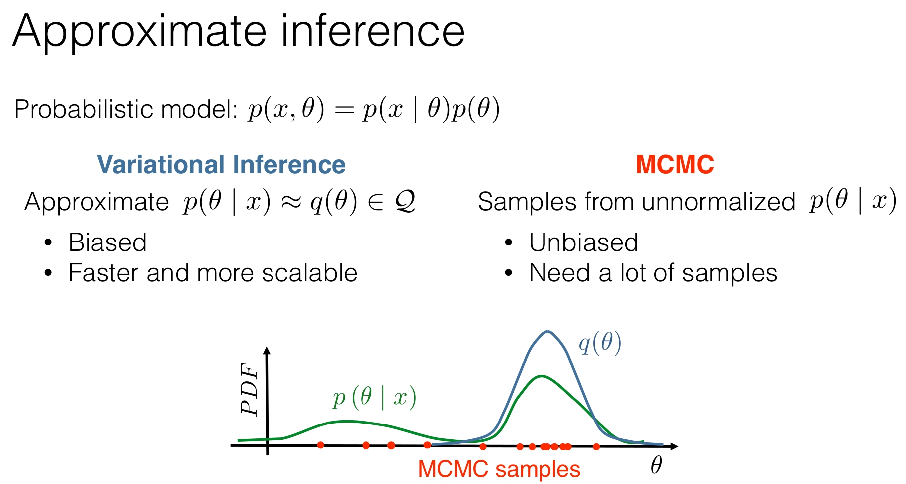
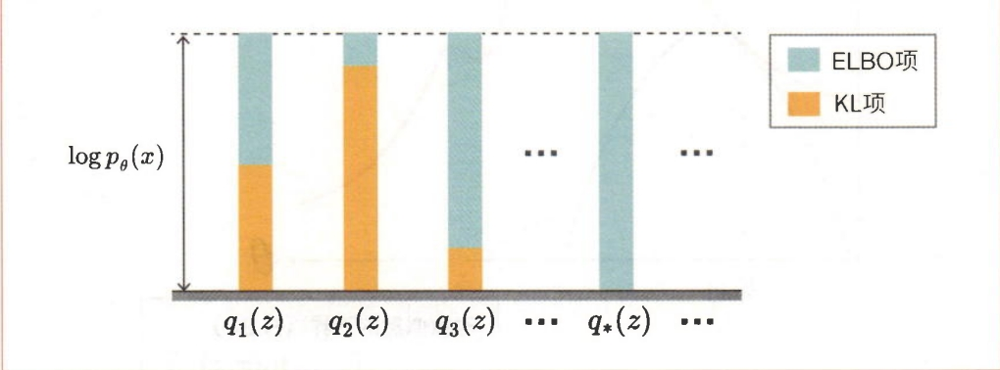
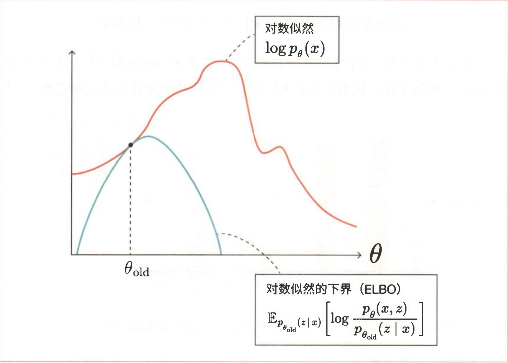
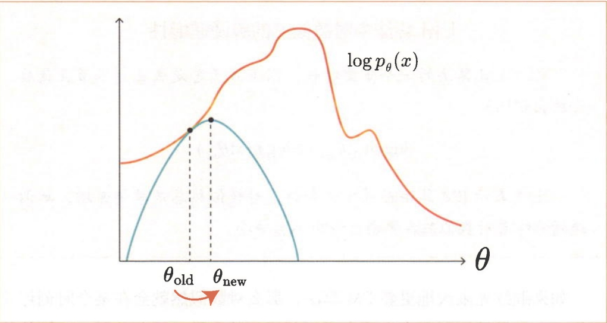
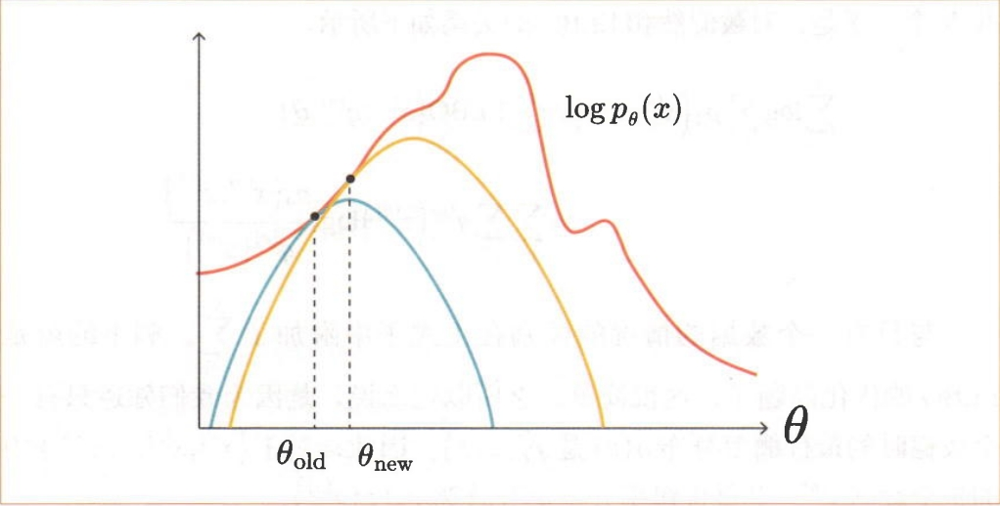
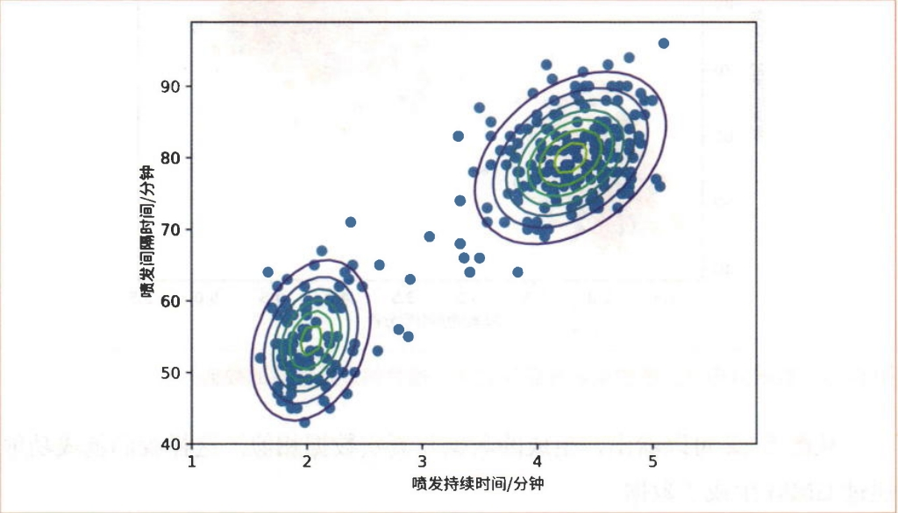
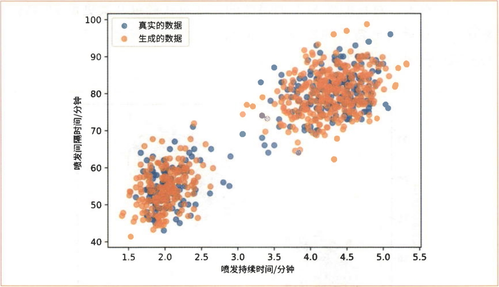

对于概率模型 \(p(x, \theta) = p(x | \theta) p(\theta)\)，有两种主要的近似推断方法:
方法:近似 \(p(\theta | x) \approx q(\theta) \in Q\)
特点: - 有偏的 (Biased):近似可能不准确 - 更快且可扩展:计算效率高 - 使用参数化分布族 \(Q\) 来近似后验
方法:从非归一化的 \(p(\theta | x)\) 中采样
特点: - 无偏的 (Unbiased):理论上可以精确 - 需要大量样本:计算成本高 - 通过采样来近似后验分布
可视化对比如图1所示。

图1 变分推断 & 蒙特卡洛采样对比
目标:找到后验分布的近似 \(p(\theta | x) \approx q(\theta) \in Q\)
优化准则:
\[F(q) := \text{KL}(q(\theta) \| p(\theta | x)) \to \min_{q(\theta) \in Q} \tag{4.1}\]
其中 \(\text{KL}(q \| p)\) 是 Kullback-Leibler 散度，用于衡量两个分布之间的不匹配程度。
Kullback-Leibler 散度是衡量同一域上两个分布之间不匹配程度的良好度量:
\[\text{KL}(q(\theta) \| p(\theta | x)) = \int q(\theta) \log \frac{q(\theta)}{p(\theta | x)} d\theta \tag{4.2}\]
在变分推断中，我们使用 \(\text{KL}(q \| p)\)，因为它更容易优化（不需要从真实后验采样）。
我们从证据（边际似然）开始:
\[\log p(x) = \int q(\theta) \log p(x) d\theta\]
由于 \(p(x)\) 不依赖于 \(\theta\)，我们可以将其移到积分内。然后使用贝叶斯定理:
\[\log p(x) = \int q(\theta) \log \frac{p(x, \theta)}{p(\theta | x)} d\theta\]
重新组织项:
\[\log p(x) = \int q(\theta) \log \frac{p(x, \theta) q(\theta)}{p(\theta | x) q(\theta)} d\theta\]
\[= \int q(\theta) \log \frac{p(x, \theta)}{q(\theta)} d\theta + \int q(\theta) \log \frac{q(\theta)}{p(\theta | x)} d\theta\]
\[= \mathcal{L}(q(\theta)) + \text{KL}(q(\theta) \| p(\theta | x)) \tag{4.3}\]
证据下界 (Evidence Lower Bound, ELBO):
\[\mathcal{L}(q(\theta)) = \int q(\theta) \log \frac{p(x, \theta)}{q(\theta)} d\theta \tag{4.4}\]
关键关系:
\[\log p(x) = \mathcal{L}(q(\theta)) + \text{KL}(q(\theta) \| p(\theta | x)) \tag{4.5}\]
\[\text{KL}(q(\theta) \| p(\theta | x)) \to \min_{q(\theta) \in Q} \tag{4.6}\]
使用我们的“魔法”关系:
\[\log p(x) = \mathcal{L}(q(\theta)) + \text{KL}(q(\theta) \| p(\theta | x)) \tag{4.7}\]
注意到: - \(\log p(x)\) 不依赖于 \(q\) - \(\text{KL}(q(\theta) \| p(\theta | x))\) 依赖于 \(q\) - \(\mathcal{L}(q(\theta))\) 依赖于 \(q\)
因此:
\[\text{KL}(q(\theta) \| p(\theta | x)) \to \min_{q(\theta) \in Q} \quad \Leftrightarrow \quad \mathcal{L}(q(\theta)) \to \max_{q(\theta) \in Q} \tag{4.8}\]
\[\mathcal{L}(q(\theta)) = \int q(\theta) \log \frac{p(x, \theta)}{q(\theta)} d\theta = \int q(\theta) \log \frac{p(x | \theta) p(\theta)}{q(\theta)} d\theta \to \max_{q(\theta) \in Q} \tag{4.9}\]
\[\mathcal{L}(q(\theta)) = \int q(\theta) \log p(x | \theta) d\theta + \int q(\theta) \log \frac{p(\theta)}{q(\theta)} d\theta \tag{4.10}\]
\[= \mathbb{E}_{q(\theta)}[\log p(x | \theta)] - \text{KL}(q(\theta) \| p(\theta)) \tag{4.11}\]
平衡:ELBO 在拟合数据和保持接近先验之间进行权衡。
式4.4中的\(\text{ELBO}(x; q, \theta)\)有两个参数\(q(z)\)和\(\theta\)。这两个参数需要优化（找出使ELBO最大的两个参数）。然而，同时优化\(q(z)\)和\(\theta\)并不容易，因此需要重复进行固定一个参数并优化另一个参数的过程。具体来说就是重复进行固定\(\theta\)并更新\(q(z)\)，然后固定\(q(z)\)并更新\(\theta\)的过程。通过重复进行这一过程，我们可以逐渐接近最优解。
首先将\(\theta\)固定为当前值（假设此时\(\theta = \theta_{\text{old}}\)），然后考虑对\(q(z)\)进行优化。\(q(z)\)表示关于\(z\)的任意概率分布。无论\(q(z)\)是什么样的概率分布，\(\log p_\theta(x) = \text{ELBO}(x; q, \theta) + \text{KL}(q(z) \| p_\theta(z|x))\)都成立。然而，不同的\(q(z)\)的分布使得\(\text{ELBO}(x; q, \theta)\)与\(\log p_\theta(x)\)的接近程度有所不同。当然，我们希望\(\text{ELBO}(x; q, \theta)\)尽可能地接近\(\log p_\theta(x)\)。为此，下面的式子可作为提示:
\[\log p_\theta(x) = \text{ELBO}(x; q, \theta) + \text{KL}(q(z) \| p_\theta(z|x)) \tag{4.12}\]
需要注意的是，\(q(z)\)并未出现在式4.12左侧的\(\log p_\theta(x)\)中。重点在于，无论\(q(z)\)如何变化，ELBO项和KL项的总和都始终保持不变（参见图2）。

图2 无论\(q(z)\)如何变化，ELBO项和KL项的总和都始终保持不变
从图2可以看出，KL项越小，ELBO项就越大。当两个概率分布相同时，KL散度取最小值0。因此，当\(q(z) = p_\theta(z|x)\)时，KL项为0，此时ELBO项最大。由于KL项实际上是0，因此\(\log p_\theta(x) = \text{ELBO}(x; q, \theta)\)。
基于以上信息，\(q(z)\)的更新式可以表示为\(q(z) = p_\theta(z|x)\)。更准确地说，由于\(\theta\)固定为\(\theta = \theta_{\text{old}}\)，因此更新式是\(q(z) = p_{\theta_{\text{old}}}(z|x)\)。这种由\(q(z) = p_\theta(z|x)\)进行的更新是EM算法的“E步骤”。E来源于“Expectation Value”（期望值）中的E。之所以称为“期望值”，是因为\(q(z) = p_\theta(z|x)\)时的ELBO可以表示为以下式子所示的期望值:
\[\text{ELBO}(x; q = p_\theta(z|x), \theta) = \sum_z p_\theta(z|x) \log p_\theta(x, z) - \sum_z p_\theta(z|x) \log p_\theta(z|x) \tag{4.13}\]
图3是E步骤更新的可视化图形。重要的一点是，当\(q(z) = p_\theta(z|x)\)时，ELBO和对数似然是相等的。

图3 E步骤中对数似然与ELBO的关系
接下来是关于\(\theta\)的优化，这个过程很简单。由于ELBO是sum-log的形式，因此可以用解析的方式求出。具体来说，可以通过求式4.13关于\(\theta\)的导数，并解出其为0的方程的做法来求出。这项任务是EM算法的“M步骤”。M是“Maximization”（最大化）的首字母，意思是使ELBO相对于\(\theta\)“最大化”（参见图4）。

图4 M步骤使ELBO相对于\(\theta\)最大化
在E步骤中，通过更新\(q(z)\)可以使ELBO更接近（等于）\(\log p(x; \theta)\)。而在M步骤中，通过更新\(\theta\)可以增大ELBO的值，从而间接增大\(\log p(x; \theta)\)的值。这就导致在E步骤中相等的\(\log p(x; \theta)\)和ELBO的值相互远离。因此，我们需要再次执行E步骤，如此反复进行。通过这样交替执行E步骤和M步骤，就能使\(\log p(x; \theta)\)逐渐增大（参见图5）。

图5 重复E步骤和M步骤
EM算法中对数似然的单调递增性
作为EM算法的一个重要特性，以下式子总是成立（本节在最后会给出证明）:
\[\log p(x; \theta_{\text{new}}) \geq \log p(x; \theta_{\text{old}}) \tag{4.14}\]
上式表示EM算法在每次更新时，对数似然总是单调递增。单调递增意味着对数似然在更新过程中不会减小。
如果继续无限次地更新EM算法，那么对数似然就会在某个时刻停止变化。由于继续更新下去也不会再更新模型的参数，因此此时EM算法的更新应该停止。在实践中，我们会设定一个阈值，当对数似然变化的绝对值低于设定的阈值时，更新的循环将终止。
接下来，考虑将EM算法扩展到\(N\)个观测数据\(\{x^{(1)}, x^{(2)}, \ldots, x^{(N)}\}\)的情况。这里，我们为每个数据准备一个对应的概率分布，即\(\{q^{(1)}, q^{(2)}, \ldots, q^{(N)}\}\)，共\(N\)个。于是，对数似然和ELBO的关系如下所示:
\[\frac{1}{N} \sum_{n=1}^{N} \log p_\theta(x^{(n)}) \geq \frac{1}{N} \sum_{n=1}^{N} \text{ELBO}(x^{(n)}; q^{(n)}, \theta) \tag{4.15}\]
与只有一个数据的情况的区别在于式子中附加了\(\sum_{n=1}^{N}\)。剩下的就是ELBO的优化问题了，这很简单。之所以这么说，是因为我们知道只有一个数据时的最优概率分布\(q(z)\)是\(p_\theta(z|x)\)。因此，对于\(\{x^{(1)}, x^{(2)}, \ldots, x^{(N)}\}\)中的每个数据\(x^{(n)}\)，其最优概率分布\(q^{(n)}(z)\)为\(p_\theta(z|x^{(n)})\)。
另外，在有\(N\)个数据的情况下，下面式子中所表示的“对数似然的均值”可用作判断更新循环是否结束的对数似然:
\[\frac{1}{N} \sum_{n=1}^{N} \log p_\theta(x^{(n)}) \tag{4.16}\]
汇总以上信息，EM算法可以归纳如下:
最后进行\(\log p(x; \theta_{\text{new}}) \geq \log p(x; \theta_{\text{old}})\)的证明。首先，在E步骤中，当使用\(q_{\text{old}}(z) = p_{\theta_{\text{old}}}(z|x)\)进行更新时，由于对数似然和ELBO相同，因此有以下式子成立:
\[\log p(x; \theta_{\text{old}}) = \text{ELBO}(x; q_{\text{old}}, \theta_{\text{old}}) \tag{4.17}\]
在M步骤中，通过最大化上式的右边得到\(\theta_{\text{new}}\)，因此有以下式子成立:
\[\text{ELBO}(x; q_{\text{old}}, \theta_{\text{new}}) \geq \text{ELBO}(x; q_{\text{old}}, \theta_{\text{old}}) \tag{4.18}\]
在下一个E步骤中，通过\(q_{\text{new}}(z) = p_{\theta_{\text{new}}}(z|x)\)进行更新。此时有以下式子成立:
\[\log p(x; \theta_{\text{new}}) = \text{ELBO}(x; q_{\text{new}}, \theta_{\text{new}}) \geq \text{ELBO}(x; q_{\text{old}}, \theta_{\text{new}}) \tag{4.19}\]
综合以上式子，可以得到下面的式子:
\[\log p(x; \theta_{\text{new}}) \geq \text{ELBO}(x; q_{\text{old}}, \theta_{\text{new}}) \geq \text{ELBO}(x; q_{\text{old}}, \theta_{\text{old}}) = \log p(x; \theta_{\text{old}}) \tag{4.20}\]
这样我们就完成了\(\log p(x; \theta_{\text{new}}) \geq \log p(x; \theta_{\text{old}})\)的证明。
在6节中，我们推导出了拥有潜变量的模型的EM算法。本节将对GMM这个具体的模型应用EM算法。
我们先来复习一下GMM。假设\(x\)是观测变量，\(z\)是潜变量，并且\(z\)是一个取值范围从1到\(K\)的离散型随机变量。然后，我们将GMM的参数表示为\(\theta = \{\phi, \mu, \Sigma\}\)（为简化数学式，将3个参数汇总为\(\theta\)）。这些参数都拥有\(K\)个元素，如下所示:
\[\phi = \{\phi_1, \phi_2, \ldots, \phi_K\} \tag{4.21}\]
\[\mu = \{\mu_1, \mu_2, \ldots, \mu_K\} \tag{4.22}\]
\[\Sigma = \{\Sigma_1, \Sigma_2, \ldots, \Sigma_K\} \tag{4.23}\]
此时的似然\(p(x; \theta)\)如以下式子所示:
\[p(x; \theta) = \sum_{j=1}^{K} p(z = j; \theta) p(x|z = j; \theta) = \sum_{j=1}^{K} \phi_j \mathcal{N}(x; \mu_j, \Sigma_j) \tag{4.24}\]
考虑到后续的式子展开，这里使用符号\(j\)来替代\(k\)。
现在，假设我们获得了\(N\)个观测数据\(\{x^{(1)}, x^{(2)}, \ldots, x^{(N)}\}\)。在这种情况下，每个数据的对数似然的均值如以下式子所示。该值将用于判断EM算法的更新是否终止:
\[\frac{1}{N} \sum_{n=1}^{N} \log p(x^{(n)}; \theta) = \frac{1}{N} \sum_{n=1}^{N} \log \sum_{j=1}^{K} \phi_j \mathcal{N}(x^{(n)}; \mu_j, \Sigma_j) \tag{4.25}\]
接下来从E步骤开始应用EM算法。在E步骤中，固定\(\{\phi, \mu, \Sigma\}\)，然后更新概率分布\(q(z)\)。\(q^{(n)}(z = k)\)是在给定\(x^{(n)}\)的条件下求得的条件概率。\(q^{(n)}(z = k)\)的数学式如下所示:
\[q^{(n)}(z = k) = p(z = k|x^{(n)}; \theta) = \frac{p(x^{(n)}|z = k; \theta) p(z = k; \theta)}{p(x^{(n)}; \theta)} = \frac{\phi_k \mathcal{N}(x^{(n)}; \mu_k, \Sigma_k)}{\sum_{j=1}^{K} \phi_j \mathcal{N}(x^{(n)}; \mu_j, \Sigma_j)} \tag{4.26}\]
为了简化表示，后续我们将使用\(q^{(n)}(k)\)来代替\(q^{(n)}(z = k)\)。这样我们就成功地用数学式表示了E步骤及其终止判断。以下是数学式的汇总:
E步骤
对于每个\((n, k)\)，计算下面的值:
\[q^{(n)}(k) = \frac{\phi_k \mathcal{N}(x^{(n)}; \mu_k, \Sigma_k)}{\sum_{j=1}^{K} \phi_j \mathcal{N}(x^{(n)}; \mu_j, \Sigma_j)} \tag{4.27}\]
M步骤
（详见7.2节）
终止判断
计算下一个对数似然，并将其与上一个对数似然进行比较:
\[\frac{1}{N} \sum_{n=1}^{N} \log \sum_{j=1}^{K} \phi_j \mathcal{N}(x^{(n)}; \mu_j, \Sigma_j) \tag{4.28}\]
剩下的就是M步骤了。在M步骤中，固定\(q\)，更新\(\theta = \{\phi, \mu, \Sigma\}\)。具体来说，就是求出使ELBO最大的参数。ELBO的数学式如下所示:
\[\text{ELBO}(\{x^{(n)}\}; \{q^{(n)}\}, \theta) = \sum_{n=1}^{N} \sum_{k=1}^{K} q^{(n)}(k) \log p_\theta(x^{(n)}, z = k) - \sum_{n=1}^{N} \sum_{k=1}^{K} q^{(n)}(k) \log q^{(n)}(k) \tag{4.29}\]
\[= \sum_{n=1}^{N} \sum_{k=1}^{K} q^{(n)}(k) \log [\phi_k \mathcal{N}(x^{(n)}; \mu_k, \Sigma_k)] - \sum_{n=1}^{N} \sum_{k=1}^{K} q^{(n)}(k) \log q^{(n)}(k) \tag{4.30}\]
值得注意的是，第二项不包含参数\(\{\phi, \mu, \Sigma\}\)。由于M步骤的目标是找到使ELBO最大的\(\{\phi, \mu, \Sigma\}\)，因此第二项可以忽略。所以，目标函数（最大化的对象）可以表示为\(J(\phi, \mu, \Sigma)\)，其数学式如下所示:
\[J(\phi, \mu, \Sigma) = \sum_{n=1}^{N} \sum_{k=1}^{K} q^{(n)}(k) \log [\phi_k \mathcal{N}(x^{(n)}; \mu_k, \Sigma_k)] = \sum_{n=1}^{N} \sum_{k=1}^{K} q^{(n)}(k) [\log \phi_k + \log \mathcal{N}(x^{(n)}; \mu_k, \Sigma_k)] \tag{4.31}\]
下面来求使\(J(\phi, \mu, \Sigma)\)最大的参数。GMM有3个参数\(\{\phi, \mu, \Sigma\}\)。首先从\(\mu\)开始。
GMM的参数\(\mu\)由\(K\)个数据\(\{\mu_1, \mu_2, \ldots, \mu_K\}\)构成。这里求关于第\(k\)个数据\(\mu_k\)的偏导数（梯度）。式子展开如下所示:
\[\frac{\partial J}{\partial \mu_k} = \frac{\partial}{\partial \mu_k} \sum_{n=1}^{N} \sum_{j=1}^{K} q^{(n)}(j) \log \mathcal{N}(x^{(n)}; \mu_j, \Sigma_j) = \sum_{n=1}^{N} q^{(n)}(k) \frac{\partial}{\partial \mu_k} \log \mathcal{N}(x^{(n)}; \mu_k, \Sigma_k) \tag{4.32}\]
对于不包含\(\mu_k\)的项，关于\(\mu_k\)的偏导数为0。
式4.32中出现的\(\frac{\partial}{\partial \mu_k} \log \mathcal{N}(x^{(n)}; \mu_k, \Sigma_k)\)是关于多维正态分布的均值向量的偏导数。推导过程中用到了下面的式A.6:
\[\frac{\partial}{\partial \mu} \log \mathcal{N}(x; \mu, \Sigma) = \Sigma^{-1}(x - \mu) \tag{A.6}\]
利用这个式子，继续展开如下:
\[\frac{\partial J}{\partial \mu_k} = \sum_{n=1}^{N} q^{(n)}(k) \Sigma_k^{-1}(x^{(n)} - \mu_k) \tag{4.33}\]
然后令\(\frac{\partial J}{\partial \mu_k} = 0\)，得到下面的式子:
\[\sum_{n=1}^{N} q^{(n)}(k) \Sigma_k^{-1}(x^{(n)} - \mu_k) = 0\]
\[\sum_{n=1}^{N} q^{(n)}(k) (x^{(n)} - \mu_k) = 0\]
\[\sum_{n=1}^{N} q^{(n)}(k) x^{(n)} = \sum_{n=1}^{N} q^{(n)}(k) \mu_k = \mu_k \sum_{n=1}^{N} q^{(n)}(k)\]
\[\mu_k = \frac{\sum_{n=1}^{N} q^{(n)}(k) x^{(n)}}{\sum_{n=1}^{N} q^{(n)}(k)} \tag{4.34}\]
这个式4.34就是\(\mu_k\)的更新式，从\(k = 1\)开始计算到\(K\)。
接下来是协方差矩阵\(\Sigma\)。\(\Sigma_k\)的求解方法与\(\mu_k\)相同（使用式A.15）。这里只展示结果:
\[\Sigma_k = \frac{\sum_{n=1}^{N} q^{(n)}(k) (x^{(n)} - \mu_k)(x^{(n)} - \mu_k)^T}{\sum_{n=1}^{N} q^{(n)}(k)} \tag{4.35}\]
需要注意的是，式4.35中的\(\mu_k\)是通过式4.34更新后的值。
最后是\(\phi = \{\phi_1, \phi_2, \ldots, \phi_K\}\)。在目标函数的式4.31中，与\(\phi\)相关的项如下所示:
\[\sum_{n=1}^{N} \sum_{k=1}^{K} q^{(n)}(k) \log \phi_k \tag{4.36}\]
不过，与\(\mu\)不同的是，\(\phi\)的优化受到限制。\(\phi\)必须满足以下约束条件:
\[\sum_{k=1}^{K} \phi_k = 1 \tag{4.37}\]
对于这种有约束的优化，可以使用拉格朗日乘子法（Lagrange Multiplier Method）来求解。
拉格朗日乘子法
拉格朗日乘子法可以用来解决“在\(g(x) = 0\)的条件下最大化\(f(x)\)”这样的问题。为此，定义以下式子:
\[L = f(x) - \beta g(x) \tag{4.38}\]
其中\(L\)是拉格朗日函数，\(\beta\)是被称为拉格朗日乘子的变量。在这种情况下，表示极值的\(x\)满足下面的式子:
\[\frac{\partial L}{\partial x} = 0, \quad \frac{\partial L}{\partial \beta} = 0 \tag{4.39}\]
现在有两个变量\(x\)和\(\beta\)。通过求解上面两个联立方程，可知\(x\)的极值。
将拉格朗日乘子法应用于本问题时，拉格朗日函数\(L\)的数学式如下所示:
\[L = \sum_{n=1}^{N} \sum_{k=1}^{K} q^{(n)}(k) \log \phi_k + \beta \left(\sum_{k=1}^{K} \phi_k - 1\right) \tag{4.40}\]
此时\(L\)关于\(\phi_k\)的偏导数可以表示为下面的式子:
\[\frac{\partial L}{\partial \phi_k} = \sum_{n=1}^{N} q^{(n)}(k) \frac{1}{\phi_k} + \beta = \frac{\sum_{n=1}^{N} q^{(n)}(k)}{\phi_k} + \beta \tag{4.41}\]
令这个式子等于0，即可得到以下解:
\[\phi_k = -\frac{\sum_{n=1}^{N} q^{(n)}(k)}{\beta} \tag{4.42}\]
然后向式4.42中代入约束条件\(\sum_{k=1}^{K} \phi_k = 1\):
\[\sum_{k=1}^{K} \phi_k = -\frac{1}{\beta} \sum_{k=1}^{K} \sum_{n=1}^{N} q^{(n)}(k) = 1\]
\[-\beta = \sum_{k=1}^{K} \sum_{n=1}^{N} q^{(n)}(k) = \sum_{n=1}^{N} \sum_{k=1}^{K} q^{(n)}(k) = N \tag{4.43}\]
这里再对式4.43做一下补充说明。\(q^{(n)}(z)\)是\(z\)的概率分布，且与\(z\)有关的概率之和为1。由于\(z\)取1到\(K\)的整数，因此有\(\sum_{k=1}^{K} q^{(n)}(z = k) = 1\)成立。
最后，将\(-\beta = N\)代入式4.42，可以得到下面的式子。这就是\(\phi_k\)的解:
\[\phi_k = \frac{1}{N} \sum_{n=1}^{N} q^{(n)}(k) \tag{4.44}\]
这样我们就完成了GMM模型的EM算法的推导。以下是数学式的汇总:
E步骤
对于每个\((n, k)\)，计算下面的值:
\[q^{(n)}(k) = \frac{\phi_k \mathcal{N}(x^{(n)}; \mu_k, \Sigma_k)}{\sum_{j=1}^{K} \phi_j \mathcal{N}(x^{(n)}; \mu_j, \Sigma_j)} \tag{4.45}\]
M步骤
对于每个\(k\)，计算下面的值:
\[\phi_k = \frac{1}{N} \sum_{n=1}^{N} q^{(n)}(k) \tag{4.46}\]
\[\mu_k = \frac{\sum_{n=1}^{N} q^{(n)}(k) x^{(n)}}{\sum_{n=1}^{N} q^{(n)}(k)} \tag{4.47}\]
\[\Sigma_k = \frac{\sum_{n=1}^{N} q^{(n)}(k) (x^{(n)} - \mu_k)(x^{(n)} - \mu_k)^T}{\sum_{n=1}^{N} q^{(n)}(k)} \tag{4.48}\]
终止判断
计算下一个对数似然，并将其与上一个对数似然进行比较:
\[\frac{1}{N} \sum_{n=1}^{N} \log \sum_{j=1}^{K} \phi_j \mathcal{N}(x^{(n)}; \mu_j, \Sigma_j) \tag{4.49}\]
本节将实现EM算法。使用的数据集是“老忠实间歇泉”数据集。
首先读取数据集并设置GMM的参数的初始值。代码如下所示:
import os
import numpy as np
path = os.path.join(os.path.dirname(__file__), 'old_faithful.txt')
xs = np.loadtxt(path)
print(xs.shape) # (272, 2)
phis = np.array([0.5, 0.5])
mus = np.array([[0.0, 50.0],
[0.0, 80.0]])
covs = np.array([np.eye(2), np.eye(2)]) # 单位矩阵
K = len(phis) # 2
N = len(xs) # 272
MAX_ITERS = 100
THRESHOLD = 1e-4xs的形状是(272, 2)，意味着有272个二维数据。然后准备phis、mus和covs作为GMM的参数。变量K是高斯分布的个数，这里的值是2；N是数据的个数；MAX_ITERS是EM算法的最大迭代次数；THRESHOLD是停止EM算法更新的阈值。如果参数更新后对数似然之间的差的绝对值低于THRESHOLD，则终止更新。
接下来是多变量正态分布、GMM和计算对数似然的代码:
def multivariate_normal(x, mu, cov):
det = np.linalg.det(cov)
inv = np.linalg.inv(cov)
d = len(x)
z = 1 / np.sqrt((2 * np.pi) ** d * det)
y = z * np.exp(-(x - mu).T @ inv @ (x - mu) / 2.0)
return y
def gmm(x, phis, mus, covs):
K = len(phis)
y = 0
for k in range(K):
phi, mu, cov = phis[k], mus[k], covs[k]
y += phi * multivariate_normal(x, mu, cov)
return y
def likelihood(xs, phis, mus, covs):
eps = 1e-8 # 避免log(0)的错误
L = 0
N = len(xs)
for x in xs:
y = gmm(x, phis, mus, covs)
L += np.log(y + eps)
return L / N前两个函数与步骤4中实现的代码相同。最后的likelihood()是用于计算对数似然的函数，它是下面的数学式的代码实现:
\[\frac{1}{N} \sum_{n=1}^{N} \log \sum_{j=1}^{K} \phi_j \mathcal{N}(x^{(n)}; \mu_j, \Sigma_j) \tag{4.50}\]
在likelihood()函数中，如果计算np.log(0)，则会发生错误。为了避免这种情况出现，需要给函数添加一个微小值eps。接下来，我们将继续实现EM算法的E步骤和M步骤。
首先从E步骤开始。E步骤的数学式如下所示:
E步骤
对于每个\((n, k)\)，计算下面的值:
\[q^{(n)}(k) = \frac{\phi_k \mathcal{N}(x^{(n)}; \mu_k, \Sigma_k)}{\sum_{j=1}^{K} \phi_j \mathcal{N}(x^{(n)}; \mu_j, \Sigma_j)} \tag{4.51}\]
这个数学式的代码实现如下所示:
for iter in range(MAX_ITERS):
# E-step
qs = np.zeros([N, K])
for n in range(N):
x = xs[n]
for k in range(K):
phi, mu, cov = phis[k], mus[k], covs[k]
qs[n, k] = phi * multivariate_normal(x, mu, cov)
qs[n] /= gmm(x, phis, mus, covs)
# M-step
# [后面马上会给出代码，此处省略]
# 终止判断
# [后面马上会给出代码，此处省略]在这里，我们在for语句中编写了E步骤的代码。这段代码首先准备一个形状为(N, K)的qs，然后计算它的元素。结合数学式和代码来看会更容易理解。
接下来是M步骤。首先是M步骤的数学式:
M步骤
对于每个\(k\)，计算下面的值:
\[\phi_k = \frac{1}{N} \sum_{n=1}^{N} q^{(n)}(k) \tag{4.52}\]
\[\mu_k = \frac{\sum_{n=1}^{N} q^{(n)}(k) x^{(n)}}{\sum_{n=1}^{N} q^{(n)}(k)} \tag{4.53}\]
\[\Sigma_k = \frac{\sum_{n=1}^{N} q^{(n)}(k) (x^{(n)} - \mu_k)(x^{(n)} - \mu_k)^T}{\sum_{n=1}^{N} q^{(n)}(k)} \tag{4.54}\]
下面给出代码实现:
for iter in range(MAX_ITERS):
# E-step
# [前面已给出代码，此处省略]
# M-step
qs_sum = qs.sum(axis=0)
for k in range(K):
# 1. phis
phis[k] = qs_sum[k] / N
# 2. mus
c = 0
for n in range(N):
c += qs[n, k] * xs[n]
mus[k] = c / qs_sum[k]
# 3. covs
c = 0
for n in range(N):
z = xs[n] - mus[k]
z = z[:, np.newaxis] # 为了与数学式保持一致，将其转换为列向量
c += qs[n, k] * z @ z.T
covs[k] = c / qs_sum[k]数学式中\(\sum_{n=1}^{N} q^{(n)}(k)\)的计算出现在了3个地方。因此，在代码中，我们首先通过qs_sum = qs.sum(axis=0)进行计算。之后，只需实现与数学式相对应的代码即可。
最后是终止判断的代码:
current_likelihood = likelihood(xs, phis, mus, covs)
for iter in range(MAX_ITERS):
# E-step
# [前面已给出代码，此处省略]
# M-step
# [前面已给出代码，此处省略]
# 终止判断
print(f'{current_likelihood:.3f}') # 输出对数似然（显示到小数点后3位）
next_likelihood = likelihood(xs, phis, mus, covs)
diff = np.abs(next_likelihood - current_likelihood) # 差的绝对值
if diff < THRESHOLD:
break
current_likelihood = next_likelihood这样我们就完成了EM算法的实现。接下来，我们运行代码来看一下。对数似然的变化情况如以下输出所示:
-16.538
-4.415
-4.357
-4.382
-4.245
-4.288
-4.164
-4.156
-4.155可以看出，对数似然是单调递增的。这里在经过9次更新后达到了阈值。下面对由更新后的参数组成的GMM进行可视化。结果如图6所示。

图6 GMM的可视化
从图6可以看出，两个“簇”分别拟合了各自的正态分布。
接下来，使用训练后的GMM生成数据。代码如下所示:
N = 500
new_xs = np.zeros([N, 2])
for n in range(N):
k = np.random.choice(2, p=phis)
mu, cov = mus[k], covs[k]
new_xs[n] = np.random.multivariate_normal(mu, cov)np.random.choice(2, p=phis)可以基于phis的概率分布随机选择0或1，然后基于所选值从相应的高斯分布生成数据。这样就生成了新数据。对生成的数据new_xs进行可视化，结果如图7所示。

图7 数据分布（蓝色的点是真实的数据，橙色的点是生成的数据）
从图7可以看出，生成的数据与真实数据相似。这样我们就成功地通过GMM生成了数据。